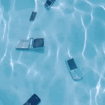

THIS WEBSITE IS INTENTIONALLY MOBILE HOSTILE

This website does not collect any information about you, or contain any tracking code whatsoever. I don't even record how many people visit! If you'd like to make your presence known, you can sign my guestbook. :)
XX/XX/XXXX: HAPPY RELEASE DAY!!! Turkeedurk.ee has been holistically redesigned and is launching into version 1.0 today! What started as a bare-bones, single-page website to contain my resume and job qualifications has been reborn into... this. I'll continue to update with art, blog posts, etc., but the framework is complete and everything that needs to be here is here!
"The villain here is not necessarily the Internet, or even the idea of social media; it is the invasive logic of commercial social media and its financial incentive to keep us in a profitable state of anxiety, envy, and distraction. It is furthermore the cult of individuality and personal branding that grow out of such platforms and affect the way we think about our offline selves and the places where we actually live."
- Jenny Odell, How to Do Nothing
I grew up with the internet. That's not just to say I had internet access growing up, I mean I watched the internet grow up with me.
Geocities, Newgrounds, albinoblacksheep, early YouTube, ebaumsworld, bronies, Homestuck, cracked.com, Liveleak, the 4Chan/Tumblr Wars, sketchy flash game sites, GamerGate, MySpace, SuperWhoLocke, IRC chats - you name it. If it was influential to internet culture I was there to observe it, for better or worse. Mostly the latter.
And throughout it all, there has always been an invisible hand gently guiding the momentum of the internet towards a space built for profit. The infrastructure of the web as we know it today isn't built for people, and it isn't even built for corporations. It's built for advertisers.
A perennial torment nexus right at our fingertips, in which our attention is the currency. It's decadent. It's insidious. It's wasting our time - on purpose!!
But it wasn't always like this.
There was a time when the internet was a place of community, where people could seek out like-minded individuals or add their personality to an international mixing pot of diverse thoughts. There were no echo chambers because there were no algorithms to create echo chambers. There was no search engine optimization because there were no search engines. You navigated from page to page with link trees and webrings and you left your mark in guestbooks and chatrooms.
This website is my push against the current state of the web. My earnest attempt to recapture the magic of "Web 1.0" by building a page where I can share my experiences with anyone who wants to see them. No frills or filters, no algos or feeds, no trackers or bots; just you, me, and some html (& CSS & javascript).
I built turkeedurk.ee to be incompatible with mobile devices by design. An internet that is built on sincerity deserves to be observed with reverence. Interacting with the net used to be a decision, it was somewhere you visited. Not work, not home, but a third solitary place nested within a computer on a desk in a room behind a door. Designed to be explored with intention, for connection and recreation.
Now it's everywhere. A constant terror that's always on and eager to remind you of its presence the instant that you forget. Sometimes, I feel a phantom vibration in my pocket when my phone is somewhere else entirely.
The University of Chicago conducted a study where they separated students into three groups: those with their phone visible on their desk, those with their phone in a pocket/bag, and those with their phone in the other room. On information processing and cognitive capacity tests, there was a significant trend in performance- those with their phone in the other room did the best, and those with their phone visible and within reach performed the worst.
That's damning. Your phone doesn't even need to be open to affect you! We are all willingly carrying around a cartoonishly evil artifact, a box that's constantly sucking our attention away and vying for our limited time and diminishing our experience of the world around us. I'm guilty of it too, and I resent that.
This website is a reflection of me, and I'm not mobile-friendly. So neither is it.
Throw your phone in the ocean, feel the rain on your skin, revert to Web 1.0.
It feels nice here, right? Schlocky and silly for sure - and maybe a bit dramatic - but it's authentic. I'm glad you're here.
xoxo,
Ben